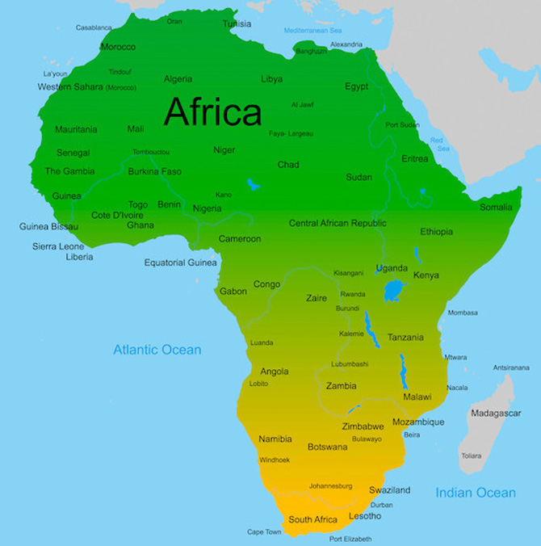

Asien är den största och mest folkrika kontinenten på jorden. Gränsen mellan Europa och Asien anses generellt gå genom Uralbergen, Uralfloden, Kaspiska havet, Kaukasus, Svarta havet, Bosporen, Marmarasjön och Dardanellerna. Gränsen mellan Asien och Afrika anses vara Suez-ismusen och Röda havet. Ungefär 62 procent av världens befolkning bor i Asien, men endast cirka 3 procent bor i de nordliga och inre delarna, nämligen Mongoliet, de centralasiatiska länderna Kazakstan, Uzbekistan, Turkmenistan, Kirgizistan och Tadzjikistan, de kinesiska provinserna Xinjiang, Tibet, Qinghai, samt ryska Sibirien.

Afrika är den näst största kontinenten (efter Eurasien) och även den näst största kontinenten i termer av area och befolkning efter Asien. Inklusive sina öar mäter Afrika 30 244 050 km², vilket motsvarar 20,3 procent av jordens landmassa eller cirka 6 procent av jordens totala yta. Ungefär 22 miljoner km² av detta ligger i tropikerna, vilket gör Afrika till den varmaste kontinenten i världen. Befolkningen i Afrika 2022 uppskattas till 1,4 miljarder, mer än en sjättedel av världens befolkning. Dess längd i en nord-sydlig riktning är cirka 8 000 km, och dess största bredd är cirka 7 800 km.
Europa (från grekiska: Ευρώπη) är den näst minsta kontinenten till ytan men den tredje mest folkrika, med lite över 750 miljoner invånare (2023), varav över 90 procent talar språk som tillhör den indoeuropeiska språkfamiljen. Europa är den näst mest tätbefolkade kontinenten och har den näst högsta produktiviteten per person. Kontinenten Europa utgör den västligaste delen av den eurasiska kontinenten, begränsad av Atlanten i väster (gränsen mot Nordamerika går genom Danmarksundet mellan Island och Danmarks autonoma land Grönland), Medelhavet i söder och Norra ishavet i norr, medan den östra gränsen mot Asien löper längs Uralbergen, Uralfloden, Kaspiska havet, Kaukasusdelningen och Svarta havet (ett innanhav av Medelhavet).